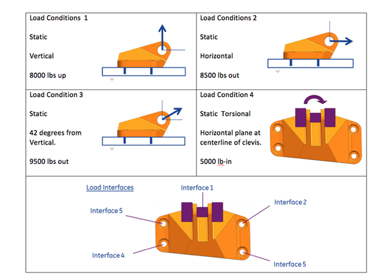
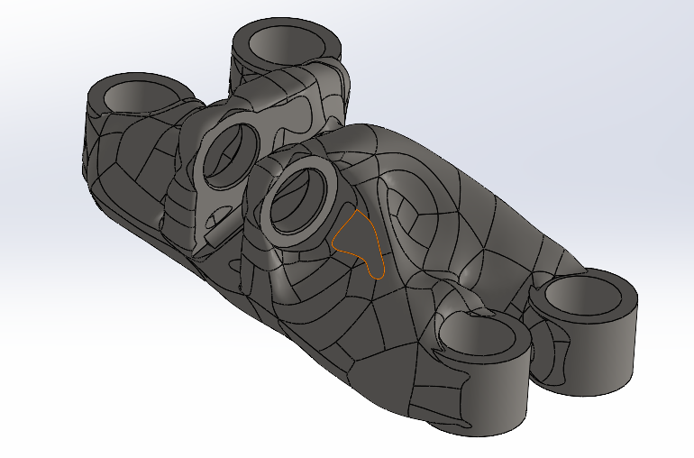
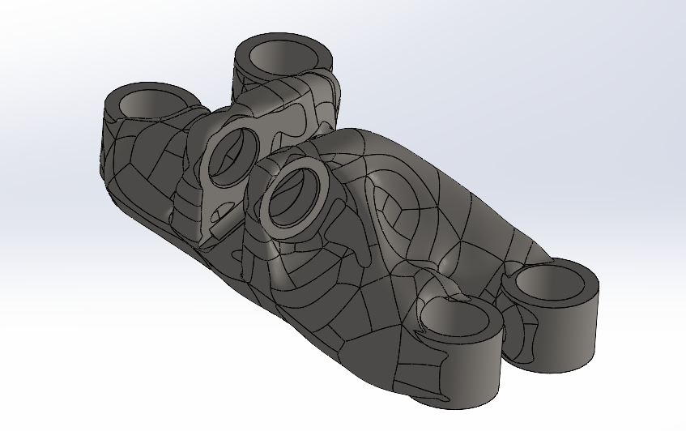
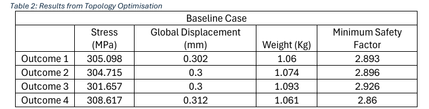
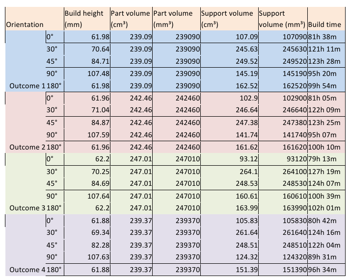
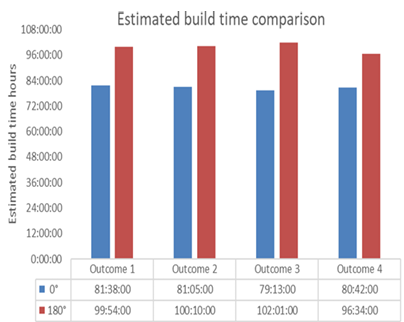
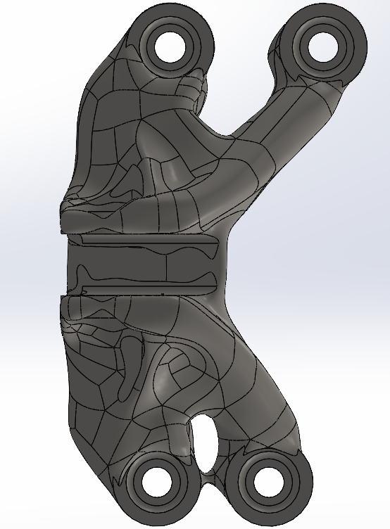
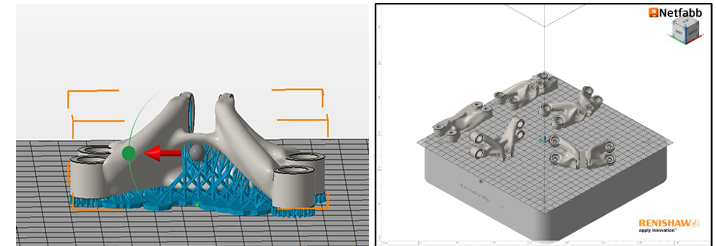

Project Overview
A team project for Swansea University's EG-M37 Additive Manufacturing module, evaluating whether additive manufacturing could replace conventional CNC milling for a real aerospace component. After a feasibility study comparing five candidate parts (a muzzle brake, a gyroid-structured heat exchanger, an automotive bell crank, an internal wing structure, and a jet engine bracket), the team selected the GE Jet Engine Bracket Design Challenge as the strongest candidate, manufactured in Ti-6Al-4V (yield strength 882.5 MPa), and carried it through generative design in Fusion 360 and build preparation in Netfabb.
Technical Approach
Key techniques
- Ran generative design in Fusion 360 under the challenge's four defined load cases (vertical, horizontal, 42° angled, and torsional loading), with constraints on minimum wall thickness (1.27 mm), a 1.5 safety factor, and a 0.5 mm maximum global displacement
- Extended the study into a morphological sensitivity analysis, exaggerating one load direction by 25% at a time (vertical, horizontal, angular, and torsional "dominance" scenarios) to see how the optimiser reshaped the bracket under each case
- Took all four generative outcomes into Netfabb and ran a manufacturability study across five build orientations (0°, 30°, 45°, 90°, 180°) for Laser Powder Bed Fusion, screening against a 70 mm build-height limit and comparing support volume and build time

Process steps
- Modelled the baseline bracket from the GE Jet Engine Bracket Challenge (GrabCAD) and ran Fusion 360 generative design against the four load cases, producing four candidate outcomes that all achieved a 45–48% mass reduction
- Re-ran the generative study under four "dominance" load scenarios to understand how the optimised geometry adapted when a single load direction was exaggerated relative to the others
- Imported each outcome into Netfabb, screened out orientations exceeding the 70 mm build-height limit, and compared the remaining 0°/180° options on support volume and estimated build time
- Selected the best-performing outcome and build orientation, then ran a cost and post-processing analysis against conventional CNC milling


Results & Analysis
All four Fusion 360 outcomes met the challenge's constraints, each achieving a 45–48% mass reduction while comfortably clearing the 1.5 minimum safety factor. The baseline-case results show stress between 301.7–308.6 MPa, global displacement of 0.30–0.31 mm, weight of 1.06–1.09 kg, and safety factors of 2.86–2.93 across the four outcomes.

Feeding all four outcomes into Netfabb's build-orientation study (0°, 30°, 45°, 90°, 180°) against the 70 mm build-height limit eliminated three of the five angles outright. Only 0° and 180° stayed under the limit, with all four outcomes measuring 61.9–62.2 mm at these two orientations versus 70–107 mm at 30°/45°/90°. Comparing the two surviving orientations, 0° won on every outcome: build time fell by roughly 18–29% (e.g. Outcome 3: 102h01m at 180° versus 79h13m at 0°) and support volume dropped by roughly 30–43% (e.g. Outcome 1: 162.5 cm³ at 180° versus 107.1 cm³ at 0°).


At the 0° orientation, Outcome 3 stood out on manufacturability, with the lowest build time (79h13m) and lowest support volume (93.1 cm³) of the four, at a modest weight penalty of around 3% versus the lightest outcome (1.093 kg vs. 1.06 kg), while also carrying the lowest peak stress (301.7 MPa) and the highest safety factor (2.926) of the four. That combination of print speed, minimal support material, and the largest safety margin made it the strongest candidate to carry forward into the cost and post-processing comparison against conventional CNC milling.


Key learnings
The build-orientation screen showed that a design finalised in simulation still has to survive a second, very different set of constraints (build height, support volume, and print time) before it's actually manufacturable. It also reinforced that the "best" outcome isn't always the lightest one: Outcome 3 traded a small weight penalty for a meaningfully faster, cheaper, and safer print, a trade-off that simulation results alone can't settle without running the manufacturability numbers.
Team & my contribution
A team project for the EG-M37 Additive Manufacturing module. My contribution covered the generative design study in Fusion 360 across all four load cases and dominance scenarios, the build-orientation and manufacturability analysis in Netfabb, and the cost and post-processing comparison against conventional CNC milling.